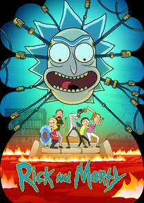
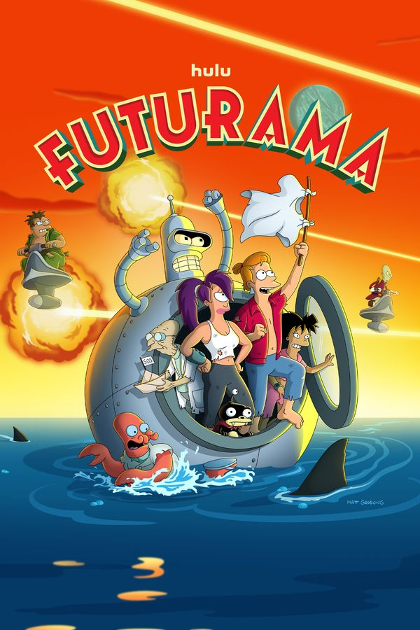
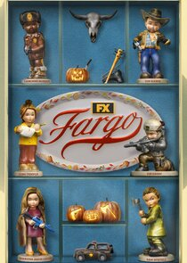
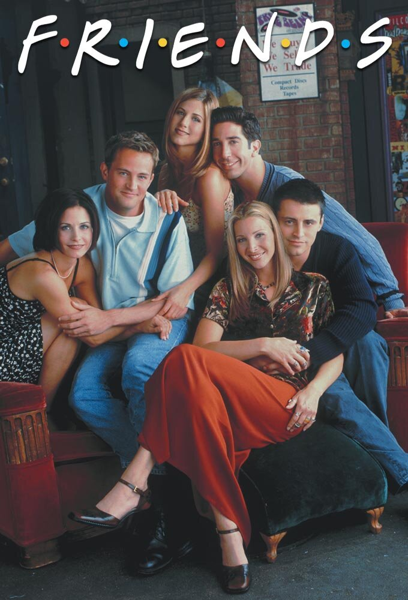
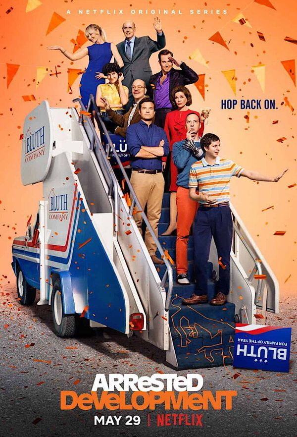

★ 8.7
The IT Crowd
2006 · Series · ★ 8.7
ComedyThe comedic misadventures of Roy, Moss and their grifting supervisor Jen, a rag-tag team of IT support workers

Build a watchlist from the Netflix Top 10 and both movie charts, then export it — right here on CineScope.
The most popular series on Netflix, ranked by TVMaze popularity data with audience ratings as a cross-check. Week of 10–16 Nov 2026, snapshot: Nov 15, 2026 — a popularity ranking of Netflix series, not Netflix's official daily viewing chart. House of Cards and Orange Is the New Black join the ranking this week.
This week's most-watched films on the official US Apple TV movie chart.
The highest audience-rated series of all time, with cast, seasons and episode counts.
Real series from the TVMaze API catalog — 300+ titles baked into this page as a frozen snapshot dated 15 Nov 2026. Drag sideways, use the arrows, or scroll: every row now has a colourful gradient scrollbar, edge fade and snap scrolling.
Pick a mood and CineScope pulls a matching title from the catalog — ratings and official watch links included.
What European audiences are watching: the official UK Apple TV movie chart.
Every guide answers one question completely, from the same real catalog data: what is trending, what is new, what is best in each genre, and where to watch it legally in the USA, UK and Europe.
Updated 15 Nov 2026 — new lists and guides built from the real 334-title catalog.
📺 Netflix Top 10 this week — Black Mirror still #1; House of Cards and Orange Is the New Black join the ranking.
🏆 Best movies of 2026 — 26 real chart titles, US & UK.
🌙 What to watch on Netflix tonight — three picks for Sunday 15 Nov, plus a 30-second chooser.
😱 Best thriller series on Netflix 2026 — ranked by TVMaze popularity + ratings.
🇺🇸 Where to watch the Netflix Top 10 legally in the USA — all 10 titles, official links.
🌍 US viewers · UK viewers — the right chart for your country.
CineScope brings the signals that shape a movie night together in one place — the Netflix Trending Top 10 popularity ranking, the official US and UK movie charts, and an all-time top-rated series index with verified audience ratings. This catalog is a dated snapshot (series rebuilt November 15, 2026; movie charts November 14, 2026) from those sources, refreshed whenever the site is rebuilt.
Each title page gives you the facts that decide a movie night: storyline, genres, cast, season and episode counts for series, the official trailer where available, and a direct link to the title's official provider page so you can watch it legally on the service that carries it. Build a watchlist, filter by genre or rating, and export your list to take it anywhere.
CineScope hosts no streams and no downloads. All metadata and posters come from legal sources — the TVMaze API for series and Apple's official iTunes charts for movies — and all artwork belongs to its respective owners.
This week's official movie charts for the United States and the UK/Europe, with directors, storylines and official Apple TV links. Chart snapshot: Nov 14, 2026.
From Band of Brothers (9.0) to Better Call Saul — see the highest-rated series ever, with full cast and episode guides.
The highest-rated TV series of all time plus the Netflix trending list — with cast, seasons, episode counts and official provider links.
A Top 10-style ranking of the most popular series on Netflix, ordered by TVMaze popularity weight for Netflix-carried series and cross-checked against audience ratings. Week of 10–16 Nov 2026, snapshot: Nov 15, 2026 — this is CineScope's popularity ranking, not Netflix's official daily Top 10 chart. Tap any title for cast, seasons, episode counts and the official series page.
Direct answer: Black Mirror is #1 in CineScope's Netflix Top 10 series this week USA ranking, followed by Arrested Development and Marvel's Daredevil. This is a TVMaze-popularity snapshot dated 14 Nov 2026 — not Netflix's official chart: it ranks Netflix-carried series by TVMaze popularity weight, cross-checked against audience ratings.
Updated: 15 Nov 2026 · Snapshot data: 14 Nov 2026 · Methodology: TVMaze popularity weight for Netflix-carried series, cross-checked with audience ratings.
Add titles in one tap and export the whole list as a file.
CineScope's ranking orders Netflix-carried series by the popularity weight TVMaze assigns them, cross-checked against audience ratings; ties on weight are broken by audience rating, then alphabetically — so the list blends current popularity with staying power. It is a snapshot ranking rebuilt with each catalog update (this one: November 15, 2026) — not Netflix's official in-app daily Top 10, which varies by country and day. Black Mirror still leads the ranking, followed by Marvel's Daredevil and Arrested Development. New this week: House of Cards enters at #4 and Orange Is the New Black at #8; Bloodline and Marco Polo leave the Top 10.
Black Mirror leads the CineScope Netflix Top 10 — a popularity ranking of Netflix series built from TVMaze data (snapshot: Nov 15, 2026), not Netflix's official daily chart.
No. Netflix's official chart is published inside the Netflix app and on Netflix's own Top 10 site, and it changes daily by country. CineScope's ranking is a TVMaze-popularity snapshot of Netflix-carried series, dated 14 Nov 2026, cross-checked against audience ratings.
The ranking orders Netflix-carried series by the popularity weight TVMaze assigns them, cross-checked against audience ratings, as of the November 14, 2026 catalog snapshot.
Start with the top three above — Black Mirror, Arrested Development and Marvel's Daredevil — or use the mood picker on the home page. Each title page shows ratings, cast, seasons and the official provider link.
Tonight's picks for Sunday 15 Nov 2026, from the CineScope Netflix Top 10 (TVMaze-popularity snapshot, 15 Nov 2026 — not Netflix's official chart).
Answer: Tonight, start with Black Mirror — #1 in the CineScope Netflix Top 10 for the week of 10–16 November 2026 (TVMaze-popularity snapshot, 15 Nov). For action, Marvel's Daredevil is #2; for a political thriller, House of Cards rejoins the ranking at #4. All three stream on Netflix in the US — pick by mood below.
#1 Black Mirror (8.4) — Drama, Science-Fiction, Thriller. Still running, 8 seasons, 32 episodes, about 62 minutes per episode. Each episode is a standalone story, so one episode is a complete night. View details →
#2 Marvel's Daredevil (8.4) — Drama, Action, Crime. Ended 2018, about 55 minutes per episode. The highest-rated action pick in the Top 10. View details →
#4 House of Cards (8.2) — Drama, Thriller. Ended 2019, about 52 minutes per episode. New in the Top 10 this week. View details →
😱 Thrilling — Black Mirror (8.4), or the full best thriller series on Netflix 2026 list.
😂 Make me laugh — Arrested Development (8.2) or Unbreakable Kimmy Schmidt (7.5); both are 30-minute episodes.
💛 Feel-good — Grace and Frankie (7.7), also 30 minutes an episode.
🧠 Mind-bending — Sense8 (8.1), #7 in the Top 10 this week.
⚔️ Epic & big — Marco Polo (8.0), Drama, Action, Adventure.
🌑 Dark & gritty — Marvel's Jessica Jones (7.9) or Bloodline (7.8).
Black Mirror — #1 in the CineScope Netflix Top 10 for the week of 10–16 November 2026. It is a TVMaze-popularity snapshot dated 15 Nov 2026, not Netflix's official daily chart.
Pick a 30-minute episode: Arrested Development (8.2), Unbreakable Kimmy Schmidt (7.5) or Grace and Frankie (7.7) — all three are in this week's Netflix Top 10 and stream on Netflix.
No. CineScope's ranking orders Netflix-carried series by TVMaze popularity weight, cross-checked with audience ratings. The snapshot is dated 15 November 2026.
More from CineScope: the full Netflix Top 10, best thriller series on Netflix 2026, where to watch the Top 10 legally in the USA, and the best movies of 2026.
Updated 15 Nov 2026 · Ranked by TVMaze popularity weight, cross-checked with audience ratings (snapshot: 15 Nov 2026).
Answer: The best thriller series on Netflix in 2026, by the CineScope ranking (TVMaze popularity weight, cross-checked with audience ratings, snapshot 15 Nov 2026): Black Mirror (8.4) at #1, Longmire (8.3) and House of Cards (8.2) behind it. Six Netflix-carried thrillers make the list below, followed by more top-rated thrillers from the wider catalog.
These six are Netflix-carried series in the TVMaze catalog (webChannel: Netflix), ordered by audience rating. Tap any poster for seasons, episode counts and the official series page.
Nine more thrillers from the wider CineScope catalog, ordered by audience rating. These are catalog titles, not Netflix claims — availability varies by country and service, and each title page links to its official provider.
Black Mirror (8.4) — #1 in the CineScope thriller ranking and #1 in the Netflix Top 10 for the week of 10–16 November 2026 (TVMaze-popularity snapshot, 15 Nov 2026).
Yes. TVMaze lists Black Mirror as Running, with 8 seasons and 32 episodes as of 15 November 2026. Each episode is a standalone story, so you can start with any season.
The six series in the first list are Netflix-carried series in the TVMaze catalog. Netflix's catalogue rotates by country and month, so check netflix.com before you settle in — the title pages link to each show's official page.
More from CineScope: what to watch on Netflix tonight, the Netflix Top 10 this week, where to watch the Top 10 legally in the USA, and the best movies of 2026.
Week of 10–16 Nov 2026 · Snapshot: 15 Nov 2026 · Official provider links only — CineScope hosts no streams or downloads.
Answer: Every title in the CineScope Netflix Top 10 for the week of 10–16 November 2026 streams on Netflix in the USA — all 10 are Netflix-carried series, led by Black Mirror at #1. No extra rental or purchase is needed beyond a Netflix subscription, but Netflix's catalogue rotates, so confirm the title is still listed before you press play.
#1 Black Mirror (8.4) — Drama, Science-Fiction, Thriller — Netflix (US)
#2 Marvel's Daredevil (8.4) — Drama, Action, Crime — Netflix (US)
#3 Arrested Development (8.2) — Comedy, Family — Netflix (US)
#4 House of Cards (8.2) — Drama, Thriller — Netflix (US)
#5 Marvel's Jessica Jones (7.9) — Action, Crime, Science-Fiction — Netflix (US)
#6 Longmire (8.3) — Drama, Thriller, Western — Netflix (US)
#7 Sense8 (8.1) — Drama, Science-Fiction, Thriller — Netflix (US)
#8 Orange Is the New Black (7.9) — Drama, Comedy, Crime — Netflix (US)
#9 Grace and Frankie (7.7) — Comedy — Netflix (US)
#10 Unbreakable Kimmy Schmidt (7.5) — Comedy — Netflix (US)
What about movies? Chart movies work differently: they link to the Apple TV store, not a subscription. In this snapshot Apple TV prices start at $4.99 in the US — see the best movies of 2026 for the current chart titles with their official Apple TV links.
Outside the USA? Availability differs by country. The UK viewers page has the UK chart, and every title page links to its official provider page so you can check your own country.
Yes. All 10 titles in the CineScope Netflix Top 10 for the week of 10–16 November 2026 are Netflix-carried series, led by Black Mirror at #1 — they stream on Netflix in the USA.
No. A Netflix subscription covers all 10 series — no extra rental or purchase. Movies on the Apple TV charts are different: those link to Apple TV, where prices in the snapshot start at $4.99.
Open the title's page on CineScope for its official provider link, then confirm on netflix.com — Netflix's catalogue rotates, and availability differs outside the USA.
More from CineScope: what to watch on Netflix tonight, the Netflix Top 10 this week, best thriller series on Netflix 2026, and the best movies of 2026.
Every movie and series in the catalog, grouped by genre. Pick a genre to filter instantly.
Best-of lists (top-rated, with FAQs):
Search across 334+ catalog titles — movies, series, the Netflix Top 10 and the TVMaze API catalog.
Comedy series about a teacher who is a bigger kid than the kids he teaches.
See what else is trending on Netflix this week.

★ 8.7
★ 8.6
★ 8.6
★ 8.5
Netflix #3The full catalog: the curated Netflix Top 10 + US/EU movie charts, plus 300+ real series from the TVMaze API catalog (ratings, genres, networks, posters & official pages), frozen as the 15 Nov 2026 snapshot. Use search and filters — then tap any poster for full details.
Direct answer: CineScope's catalog holds 26 real titles from 2026 — all of them movies from the official US and UK Apple TV charts (snapshot: 14 Nov 2026). The US chart is led by Heart of the Beast, Resident Evil (2026) and Spider-Man: Brand New Day. The list below is every 2026 title in the catalog, ordered by chart position — nothing added, nothing invented.
Updated: 15 Nov 2026 · Source data: US & UK Apple TV charts, catalog snapshot 14 Nov 2026.
How the list was chosen: a title appears here only if its recorded release year in the catalog data is 2026. There are no 2026 series in the current snapshot data, so this is a 2026 movies list — stated plainly rather than padded. Looking for the best movies on Netflix November 2026? Pair this page with the Netflix Top 10 snapshot.
| Genre | 2026 titles | Examples |
|---|
All of them. Every title in the list above has 2026 as its release year in the catalog data — 26 movies in total, from the US Apple TV chart and the UK Apple TV chart in the 14 Nov 2026 snapshot.
The list is not hand-picked opinions. It takes every title in the CineScope catalog whose recorded year is 2026 and orders it by its chart position — US chart first, then the UK chart — exactly as published in the 14 Nov 2026 snapshot.
Each movie links to its official Apple TV store page — the US store for US-chart titles and the UK store for UK-chart titles. Open the title page and use the official provider button.
Updated: 15 Nov 2026 · Ranked by audience rating in the catalog data (TVMaze / Apple charts, snapshot 14 Nov 2026).
| # | Title | Year | Rating | Type |
|---|
Direct answer: Every title on CineScope links to its official provider only — movies to their official Apple TV store page (US or UK store), series to their official TVMaze page with the network and official links. CineScope hosts no streams, no downloads and no pirated links. Availability differs by country, so always confirm on the provider page for your region.
Updated: 15 Nov 2026 · Provider data: catalog snapshot 14 Nov 2026 (TVMaze networks + Apple TV charts).
| Provider / network | Titles in catalog | What it is |
|---|
USA: US-chart movies link to the Apple TV US store (prices in USD). Series pages show the US network recorded by TVMaze — Netflix, HBO (Max), CBS, NBC, ABC, FOX, AMC and others. See also Best for US Viewers.
UK: UK-chart movies link to the Apple TV UK store (prices in GBP). UK networks in the data include BBC One, ITV1 and Channel 4. See also Best for UK Viewers and the best movies on Netflix UK November 2026 picks there.
EU: There is no single EU catalogue — each country is licensed separately. Use the same check: open the official provider page signed in to your own country's store or service. The UK chart is CineScope's closest European signal in the current data.
There is no single EU catalogue: each EU country is licensed separately, and CineScope's catalog data has no separate EU chart — the UK Apple TV chart is the closest European signal in the current data. To check a title, open its official provider page signed in to your own country's store or service; the provider table above lists the networks recorded in the catalog.
Yes. CineScope is a discovery guide: it publishes metadata, ratings, cast and trailers from legal sources (the TVMaze API and Apple's official iTunes charts) and links out to official provider pages. It hosts no streams, no downloads and no pirated content.
Open the title page, follow the official provider button, and check while signed in to your own region. Streaming catalogues differ between the USA, UK and EU, and the provider page always shows the options for your country.
Studios license titles country by country, so the same film or series can sit on different services — or none — in the US, UK and EU. That is why CineScope labels every chart title with its region and never promises one worldwide provider.
No. CineScope hosts no streams and no downloads. Every title links to its official provider page, where you can watch it legally.
Direct answer: The newest titles in CineScope's catalog are the 2026 movies on the official US and UK Apple TV charts — led by Heart of the Beast (US #1) and Savage House (UK #2) — from the catalog snapshot dated 14 Nov 2026. This page lists them by release year, then chart position, and is rebuilt whenever the catalog is.
Updated: 15 Nov 2026 · Snapshot data: 14 Nov 2026. “New” = newest release years in the snapshot, not a live release feed.
It means the newest titles in the current catalog snapshot — the 14 Nov 2026 build of the catalog — ordered by release year and chart position. CineScope dates the snapshot honestly instead of claiming a live feed.
The catalog snapshot is dated 14 Nov 2026 and this page was updated on 15 Nov 2026. The list changes when the catalog is rebuilt with newer chart and TVMaze data.
Not necessarily. The newest entries are 2026 movies from the official US and UK Apple TV charts. For Netflix specifically, see the Netflix Top 10 page — a TVMaze-popularity snapshot, not Netflix's official chart.
Direct answer: For viewers in the United States, CineScope's data points to two lists: the official US Apple TV movie chart (snapshot 14 Nov 2026, led by Heart of the Beast) and the Netflix Top 10 series this week USA ranking (led by Black Mirror — a TVMaze-popularity snapshot, not Netflix's official chart). Both are below, with ratings and legal watch links.
Updated: 15 Nov 2026 · US chart + Netflix snapshot data: 14 Nov 2026.
On CineScope's data, the top of the official US Apple TV movie chart in the 14 Nov 2026 snapshot: Heart of the Beast at #1, followed by Resident Evil (2026) and Spider-Man: Brand New Day.
Black Mirror leads CineScope's Netflix Top 10 series this week USA ranking — a TVMaze-popularity snapshot dated 14 Nov 2026, not Netflix's official chart.
Movies link to their official Apple TV US store page; series link to their official TVMaze page with the network and official links. See the Where to Watch guide for the full method.
Direct answer: For UK viewers, the strongest picks in CineScope's data are the official UK Apple TV movie chart (snapshot 14 Nov 2026, led by The Hunger Games: The Ballad of Songbirds and Snakes) plus the Netflix Top 10 snapshot for series. If you searched for the best movies on Netflix UK November 2026, start with the chart below, then the Netflix Top 10 — remembering it is a TVMaze-popularity snapshot, not Netflix's official UK chart.
Updated: 15 Nov 2026 · UK chart data: Apple UK store, snapshot 14 Nov 2026.
The Netflix Top 10 snapshot ranking (TVMaze-popularity, 14 Nov 2026 — not Netflix's official chart):
CineScope answers from its own data: the UK Apple TV chart in the 14 Nov 2026 snapshot is led by The Hunger Games: The Ballad of Songbirds and Snakes, and the Netflix Top 10 snapshot page ranks the most popular Netflix series. Netflix's UK catalogue differs from the US one, and CineScope's Top 10 is a TVMaze-popularity snapshot — not Netflix's official UK chart.
The UK chart comes from Apple's UK iTunes store and the US chart from the US store, so titles, order and prices (GBP vs USD) differ. CineScope labels every movie with its region.
UK-chart movies link to their official Apple TV UK store page. For series, open the title page for the network and official links, and check availability signed in to your UK account.
Your saved movies and series. The list is stored in this browser (localStorage), so it is here when you come back on this device.
Your daily visitor numbers for CineScope — page views, unique visitors per day, top titles, top pages, where visits came from, and smartlink clicks.
This dashboard is for the site owner only. Enter the password to view it.
Wrong password — try again.
Privacy-friendly — no cookies: this dashboard needs no cookie banner, because it sets no cookies and sends nothing anywhere. It only reads what CineScope's own analytics hook (window.CineScopeAnalytics) has recorded in this browser's localStorage, on this device. Every number below is therefore this browser only — a per-device estimate, not site-wide traffic. Real site-wide traffic (all visitors, not just this browser) only appears once GA4 or Plausible is connected — see the status panel below and the setup steps in Guides & FAQ.
Export downloads today's numbers as a plain-text file and also tries to copy them to your clipboard — ready to paste into the daily visitor report.
How CineScope ranks titles, answers to common questions, and the SEO/GEO files (robots.txt, sitemap.xml, llms.txt) ready to deploy with the site on its own domain.
Netflix Top 10 refreshed from the frozen TVMaze snapshot (House of Cards #4 and Orange Is the New Black #8 join; Bloodline and Marco Polo leave the Top 10). New guides: Best movies of 2026, What to watch on Netflix tonight, Best thriller series on Netflix 2026, Where to watch the Top 10 legally in the USA — plus real US and UK viewer pages.
CineScope is a legal movies & series discovery guide for viewers in the United States and Europe. It publishes 334 real titles with ratings, genres, cast, seasons, episode counts and official trailers, and links every title to its official provider page.
CineScope is not a streaming site. It hosts no streams, no downloads and no pirated content, and it never will. When you press “Watch”, you leave CineScope for the title's official provider.
Data sources: series metadata, posters, cast and episode counts come from the TVMaze API; movie charts and artwork come from Apple's official iTunes charts for the US and UK stores; trailers are official YouTube uploads. Catalog snapshot: 14 Nov 2026.
Canonical address: https://cinescope-5g7u.onrender.com — this Render URL is the site's canonical address until it moves to its own custom domain, when the canonical, robots.txt, sitemap.xml and llms.txt must all be re-pointed to that domain.
Checking…Clicks this session: 0
The site-wide smartlink is controlled from one place: open the site code, find SMARTLINK_URL at the top of the script and paste your smartlink between the quotes — for example the Direct Link / Smartlink URL from Adsterra, Monetag, OGAds or your network. Save, and every smartlink placement goes live at once. Leave it empty and the buttons run in demo mode, so you can test the flow first.
Placements wired to SMARTLINK_URL: the sponsored bar under the header (every page), the home banner, the hero “Sponsored pick” button, in-feed banners on Movies, Series, Netflix Top 10, All 300+ and Watchlist, the title-page button + banner, and the footer “Today's Smart Pick” link. Every click opens the smartlink in a new tab; the official provider buttons are never replaced.
Series data, ratings, cast and episode counts come from the TVMaze API; the Netflix ranking orders Netflix-carried series by TVMaze popularity weight, cross-checked with audience ratings. Movie charts are Apple's official iTunes store charts — the US store for the American chart and the UK store for Europe. Nothing is scraped from pirate sites and no streams or downloads are hosted.
Viewing habits differ across the Atlantic. CineScope publishes both the US chart and the UK/European chart side by side and labels every movie with its region, so a reader in Berlin or New York sees the ranking that matches their stores and services.
Black Mirror leads the CineScope Netflix Top 10 — a popularity ranking of Netflix series built from TVMaze data (snapshot: Nov 15, 2026), not Netflix's official daily chart. See the full ranking on the Netflix Top 10 page.
House of Cards (8.2) enters at #4 and Orange Is the New Black (7.9) at #8; Marvel's Daredevil rises to #2. Bloodline and Marco Polo leave the Top 10. The ranking is a frozen snapshot, rebuilt with each catalog update — snapshot: 15 Nov 2026. It is CineScope's ranking, not Netflix's official daily chart.
No. CineScope is a discovery guide. It publishes legal metadata, ratings, cast and trailers, and every title links out to its official provider page, where you can watch it legally.
Series data, posters, cast and episode counts come from the TVMaze API. Movie charts and artwork come from Apple's official iTunes charts for the US and UK stores. Series snapshot: November 15, 2026; movie charts: November 14, 2026.
No. Browsing, search, filters, the watchlist, the full episode breakdown, the HD poster pack and the watchlist export need no account — everything is open.
Yes. CineScope tracks both the US and UK/European movie charts and marks each title with its region.
Use the mood picker on the home page, or start from the Netflix Top 10 snapshot and the US and UK movie charts. Every title page shows the rating, genres, cast and a link to the official provider, so you can decide in under a minute and watch legally.
Title pages show the network or provider recorded in the catalog data. Netflix catalogues differ by country, so open the title's official provider page and check while signed in to your own region — that page always shows the options for your country. See the Where to Watch guide.
Yes. CineScope is a discovery guide: it publishes metadata, ratings, cast and trailers from legal sources (the TVMaze API and Apple's official iTunes charts) and links out to official provider pages. It hosts no streams, no downloads and no pirated content.
CineScope ranks Netflix-carried series by TVMaze popularity weight, cross-checked against audience ratings. The current snapshot is dated 14 Nov 2026. It is a popularity snapshot — not Netflix's official daily chart, which Netflix publishes itself and which changes daily by country.
Open the title page and use the official provider button. Movies link to their official Apple TV store page (US or UK store); series link to their official TVMaze page, which lists the network and official links. The Where to Watch guide explains how to check availability in your country.
Tap the plus button on any poster, or “Add to watchlist” on a title page. The list is stored in this browser only (localStorage), so it is private to this device and needs no account. You can export it as a file from the Watchlist page.
From CineScope's own catalog data: the Netflix Top 10 snapshot page ranks the most popular Netflix series (TVMaze-popularity snapshot, 14 Nov 2026), and the Best of 2026 page lists every 2026 title on the US and UK charts. For the UK, see the Best for UK Viewers page. Neither ranking is Netflix's official chart.
It is one sponsored link shown across the site. When you tap it, our ad partner matches you to a trending movie, series or streaming offer for your country (US & Europe) and opens it in a new tab. It is advertising — it never replaces a title's official provider link, and CineScope still hosts no streams or downloads.
The real file ships at the site root (robots.txt) and its Sitemap line points at the Render sitemap.
The real file ships at the site root (sitemap.xml) and lists all 49 real paths — hub, cluster and title pages. Every URL has lastmod 2026-11-15.
The real file ships at the site root (llms.txt) so ChatGPT, Perplexity, Claude and other AI engines can understand and cite the site correctly. Its canonical URL is the Render domain until a custom domain is set.
Your visitor dashboard is live at /dashboard/ (also linked in the main menu and footer). It works with zero backend: it reads only what window.CineScopeAnalytics records in this browser's localStorage — page views (all time + today), a per-day unique-visitor flag, top titles, top pages, referrer type (search / social / direct / other, from document.referrer plus UTM parameters), smartlink clicks. It is privacy-friendly: no cookies, so no cookie banner is needed. Until GA4 or Plausible is connected, the dashboard shows this browser's own visits only — a per-device estimate, not site-wide traffic.
Connect GA4 (Google Analytics 4) — for real site-wide traffic:
Connect Plausible (privacy-friendly alternative):
Plain note: real site-wide traffic — every visitor, not just this browser — only appears once GA4 or Plausible is connected. Until then, the dashboard honestly shows this browser's own visits only, and shows 0 with “No visits recorded yet on this browser” when nothing has been recorded. Also at deploy: verify the domain in Google Search Console, submit sitemap.xml, and the canonical, robots.txt, sitemap.xml and llms.txt already point at the Render domain — re-point them only if a custom domain is set. You can inspect the local hook anytime with CineScopeAnalytics.summary() in the browser console.
One link, matched to your country — the trending movie, series & streaming offer for US & Europe viewers right now.
Checking…
Get the weekly Top 10 — Netflix trending, US & Europe movie charts and the highest-rated premieres — in one short email every Friday.
✅ You're in. Your first Top 10 digest is queued for Friday.
See this week's Netflix Top 10